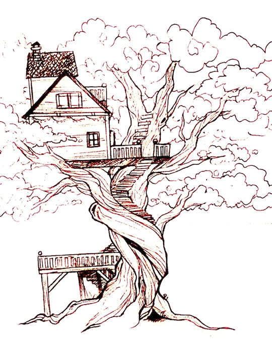

I'm Jingqi! My pronouns are he/they. I'm currently a Benefits Analyst at LHS Benefits, and I graduated from Tufts with a B.S. in Computer Science in May 2020. I was a software engineer for a bit, and spend a lot of my time turning my less tech-y job into a tech job.
One of my main areas of interest that I'm honestly getting pretty rusty at out of school is programming language design/functional programming. I'm also something of an amateur game developer and I love combining game development with PL design. Currently, I mostly write random python scripts to make my life easier.
On the other side of learning, one of my favorite things in the world is teaching computer science! I just think it's the greatest thing to be able to pass on knowledge and help others understand interesting and complex concepts in the world of CS. I've taught several Girls Make Games summer camps and workshops over the years, and I highly recommend checking them out, especially if you know any girls interested in video games and game development.
Outside CS, I love playing volleyball and the outdoors. I love bird photography, hiking, and kayaking. My life goal is to one day live in a tree house.
My friend Darren's artistic rendition of my future tree house:

Thanks for reading, have a lovely day!